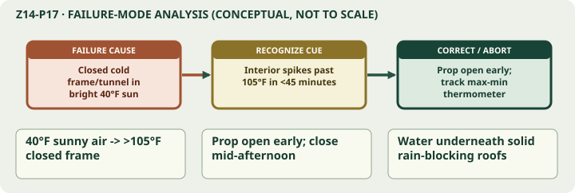

Z14-P17 · Food production and preservation · New manuscript
Ventilate cold frames and low tunnels to prevent rapid midday overheating
Use passive solar cold frames and hoop tunnels productively in northern springs without cooking crops alive on sunny days.
When it applies · Enclosed glass/polycarbonate cold frames, hoop houses, and clear plastic low tunnels.
Equipment · Max-min thermometer inside the tunnel, prop sticks or automatic wax-piston vent openers, and tie-down weights.

Actions
- Monitor actual interior air temperature with a simple max-min thermometer—even when outdoor Minnesota air is a crisp 40°F in April, bright sunshine can push an unvented closed cold frame past 105°F in under 45 minutes, killing seedlings rapidly.[P19]
- Prop cold-frame lids open or roll up tunnel sides early every sunny morning before interior temperatures cross roughly 70–75°F, then close them mid-afternoon before sunset to trap warm evening air.[P19]
- Anchor lightweight hoop frames firmly against spring wind gusts and keep irrigation steady inside covered tunnels because rain cannot reach soil beneath solid plastic roofs.[P19, P03]
Failure recognition · Closing a glass cold frame tight on a chilly sunny April morning before leaving for work and returning to scorched dead lettuce and brassicas.[P19]
Verify · Confirm max-min thermometer placed inside, daily venting/closing schedule or automatic vent active, and soil moisture checked beneath roofs.[P19]
Stop or change course · Repeated midday heat spikes above 85–90°F require switching from solid plastic to breathable shade/row fabric or opening full sides.[P19]
Evidence and editorial notes
- P03 · University of Minnesota Extension · Planting the Vegetable Garden (current web edition)
- Section: Watering, Mulching, Crop Rotation, and Integrated Pest Management · Conditions: Home vegetable plots across seasonal dry/wet swings
Support: Water deeply at the soil base rather than overhead foliage to conserve moisture and curb fungal disease, mulch soil to stabilize temperature and weeds, rotate plant families across seasons, and identify pests before choosing least-toxic controls.
Limitations: Untreated rainwater or suspect surface water should not be splashed onto ready-to-eat leafy crops immediately before harvest. · Conflicting evidence: None; aligns with FSG-4 clean produce handling.
Editorial note: Grounds resilient low-input gardening and biological pest management. · Specialist reviewer: Extension horticulture and integrated pest management
Primary source · checked 2026-11-24 - P19 · University of Minnesota Extension · Planting the Vegetable Garden (current web edition)
- Section: Season Extension, Cold Frames, Seed Saving Limits, and Succession Planting · Conditions: Northern short-season gardens seeking spring/fall harvest extension
Support: Use row covers, low tunnels, or ventilated cold frames to buffer light frosts and stagger fast-maturing crops (succession planting), noting that open-pollinated vs hybrid seeds behave differently if saved and require isolation/dry storage.
Limitations: Unvented plastic tunnels overheat rapidly on sunny spring days and cook tender seedlings within an hour. · Conflicting evidence: None; grounds realistic northern season extension without overpromising winter yields.
Editorial note: Supports northern resilience and seed-planning cards in Z14. · Specialist reviewer: Horticulture and Extension specialist
Primary source · checked 2026-11-24
Source lineage · UMN Extension Vegetable Crop Management; new manuscript · Classification · New manuscript.